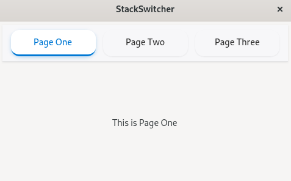

(update:2026/4/30)
Gtk::StackSwitcher は、gtkmm4 の Stack（Gtk::Stack）と組み合わせて使うナビゲーション用ウィジェットで、アプリの画面切り替えを直感的に扱えるようにするための“タブスイッチャー”のような存在です。
Gtk::StackSwitcher は Gtk::Stack に登録された各ページをボタンとして自動生成し、ユーザーがクリックすると Stack の表示ページが切り替わります。
つまり、Stack の状態を反映する“コントロールパネル”です。
Stack のページ一覧を読み取り、ページごとのボタンを自動生成します。
void Gtk::StackSwitcher::set_stack( Gtk::Widget& child )
Gtk::Stack のページには、タイトルを設定することができます。Gtk::StackSwitcher では、このタイトルをユーザーインターフェースに反映します。
Gtk::StackSwitcher は、CSS でタブ風・ボタン風・フラット UI など自由に変更できます。
Gtk::Stack に表示するページを登録し、その後、Gtk::Stack を Gtk::StackSwitcher に結びつけます。
Gtk::StackSwitcher、Gtk::Stack を宣言します。
Gtk::StackSwitcher::set_stack() を用いて、Gtk::Stack とGtk::StackSwitcher の連携を行います。
set_margin_*() を用いて、Gtk::StackSwitcher の各辺のマージンを設定します。
左側のマージンを設定します。
上側のマージンを設定します。
右側のマージンを設定します。
下側のマージンを設定します。
Gtk::Box::append() を用いて、Gtk::StackSwitcher を Gtk::Box に格納します。
#include <gtkmm.h>
#include <iostream>
class MyWindow : public Gtk::Window {
public:
MyWindow();
virtual ~MyWindow() = default;
private:
void apply_css();
Gtk::Stack* stack;
// 1.child widget の宣言
Gtk::StackSwitcher* switcher;
};
MyWindow::MyWindow()
{
set_title( "StackSwitcher" );
set_default_size( 480, 300 );
// --- Stack ---
stack = Gtk::make_managed<Gtk::Stack>();
stack->set_transition_type(Gtk::StackTransitionType::SLIDE_LEFT_RIGHT);
stack->set_transition_duration( 250 );
// --- Page 1 ---
auto label1 = Gtk::make_managed<Gtk::Label>( "This is Page One" );
label1->set_vexpand( true );
stack->add( *label1, "page1", "Page One" );
// --- Page 2 ---
auto label2 = Gtk::make_managed<Gtk::Label>( "This is Page Two" );
label2->set_vexpand( true );
stack->add( *label2, "page2", "Page Two" );
// --- Page 3 ---
auto label3 = Gtk::make_managed<Gtk::Label>( "This is Page Three" );
label3->set_vexpand( true );
stack->add( *label3, "page3", "Page Three" );
// --- StackSwitcher ---
switcher = Gtk::make_managed<Gtk::StackSwitcher>();
// 2.Gtk::Stack とGtk::StackSwitcher の連携
switcher->set_stack( *stack );
// 3.Gtk::StackSwitcher の margin の設定
switcher->set_margin_top( 6 ); // Upper
switcher->set_margin_bottom( 6 ); // Lower
switcher->set_margin_start( 6 ); // Left
switcher->set_margin_end( 6 ); // Right
// --- Layout ---
auto vbox = Gtk::make_managed<Gtk::Box>( Gtk::Orientation::VERTICAL );
// 4.Gtk::StackSwitcher を Gtk::Box に格納
vbox->append( *switcher );
vbox->append( *stack );
set_child( *vbox );
// --- CSS 適用 ---
apply_css();
}
void MyWindow::apply_css() {
auto provider = Gtk::CssProvider::create();
try {
provider->load_from_path("style.css");
} catch( const Glib::Error& ex ) {
std::cerr << "CSS load error: " << ex.what() << std::endl;
return;
}
auto display = Gdk::Display::get_default();
Gtk::StyleContext::add_provider_for_display(
display, provider, GTK_STYLE_PROVIDER_PRIORITY_APPLICATION);
}
int main( int argc, char* argv[] )
{
auto app = Gtk::Application::create( "stackswitcher.example" );
return app->make_window_and_run<MyWindow>( argc, argv );
}
/* ================================
StackSwitcher 全体
================================ */
stackswitcher {
padding: 8px;
background: #f7f7f9;
border-bottom: 1px solid rgba( 0, 0, 0, 0.08 );
/* 全体を少し浮かせる */
box-shadow: 0 1px 3px rgba( 0,0,0,0.08 );
}
/* ================================
タブ（ボタン）
================================ */
stackswitcher button {
border: none;
background: transparent;
padding: 8px 18px;
margin: 0 6px;
color: #333;
font-weight: 500;
/* より洗練された角丸 */
border-radius: 14px;
/* インジケータ線の土台（透明） */
border-bottom: 3px solid transparent;
transition:
background 140ms ease,
color 140ms ease,
border-bottom 140ms ease,
box-shadow 140ms ease;
}
/* ホバー時：軽い浮遊感 */
stackswitcher button:hover {
background: rgba( 0, 0, 0, 0.06 );
box-shadow: 0 1px 2px rgba( 0,0,0,0.12 );
}
/* ================================
選択中タブ（インジケータ線 + 影）
================================ */
stackswitcher button:checked {
background: #ffffff;
color: #0078D4;
/* インジケータ線 */
border-bottom: 3px solid #0078D4;
/* 選択タブを少し浮かせる */
box-shadow: 0 2px 6px rgba( 0, 120, 212, 0.25 );
}
/* ================================
フォーカスリング（控えめで美しい）
================================ */
stackswitcher button:focus-visible {
outline: none;
box-shadow: 0 0 0 3px rgba( 0, 120, 212, 0.35 );
}
/* 無効状態 */
stackswitcher button:disabled {
opacity: 0.4;
}

| Previous | Top | Next |
| Copyright (c) Henrry Yamm Project All Rights Reserved. |
|---|